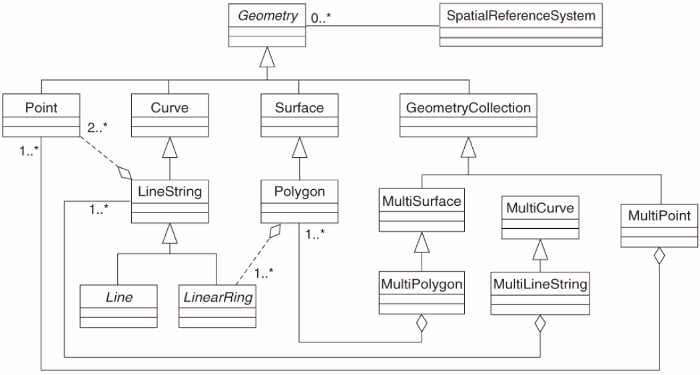
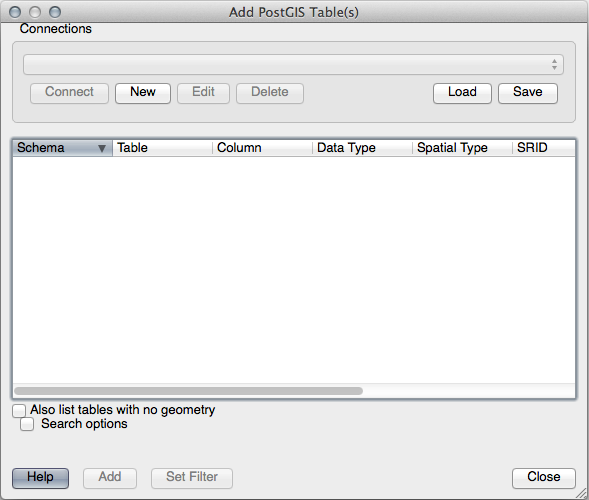
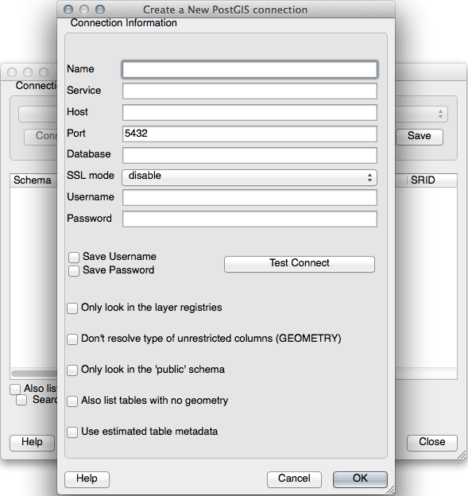

重要
翻訳は あなたが参加できる コミュニティの取り組みです。このページは現在 84.00% 翻訳されています。
16.2. レッスン: 単純地物モデル
データベースの中にどのように地物を保存し、表現できるでしょうか? このレッスンではOGCによって定義されている単純地物モデルを見ていきます。
このレッスンの目標: SFSモデルとは何か、それをどうやって使うかを学習します。
16.2.1. OGCとは
Open Geospatial Consortium (OGC)は、1994年に発足した国際的な民間コンセンサス標準団体です。OGCでは、世界中の370以上の企業、政府、非営利組織そして研究機関が協力し、地理空間コンテンツとサービス、GISデータの解析と交換のための標準の開発と実装を行っています。 - Wikipedia
16.2.2. SFSモデルとは
SQL用単純地物 (SFS) モデルとはデータベースに地理空間データを格納する 非トポロジ的 な方法で、データへのアクセス、操作、構築のための関数を定義しています。

このモデルは地理空間データをポイント、ラインストリング及びポリゴン型（そしてそれらの集合）で定義しています。
詳細は、OGC Simple Feature for SQL 標準を見てください。
16.2.3. ジオメトリフィールドをテーブルに追加する
people（人）テーブルにポイントフィールドを追加しましょう：
alter table people add column geom geometry;
16.2.4. ジオメトリタイプに基づく制約を追加する
ジオメトリフィールドタイプは、フィールドのジオメトリの タイプ を暗黙に指定していないことに気づくでしょう。そのために制約が必要です:
alter table people
add constraint people_geom_point_chk
check(st_geometrytype(geom) = 'ST_Point'::text
OR geom IS NULL);
これはポイントジオメトリまたはnull値だけを受け入れる制約をテーブルに追加します。
16.2.5. ★★★ （上級レベル） 自分でやってみよう:
cities（都市）という新しいテーブルを作成して、それに適切な列を追加します。それにはポリゴン(市の境界)を格納するジオメトリフィールドを含めて、ジオメトリをポリゴンに制限する制約を追加して下さい。
答え
16.2.6. geometry_columns テーブルの設定
この時点で、 geometry_columns テーブルにエントリを追加する必要があります：
insert into geometry_columns values
('','public','people','geom',2,4326,'POINT');
Why? geometry_columns is used by certain applications to be aware of
which tables in the database contain geometry data.
注釈
上記の INSERT 文でエラーが発生した場合は、まずこのクエリを実行してください：
select * from geometry_columns;
If the column f_table_name contains the value people, then
this table has already been registered and you don't need to do anything
more.
値「2」は次元の数を示します。この場合、 X と Y の2つです。
The value 4326 refers to the projection we are using; in this case, WGS
84, which is referred to by the number 4326 (refer to the earlier discussion
about the EPSG).
★☆☆ （初級レベル） 自分でやってみよう:
Add an appropriate geometry_columns entry for your new cities layer
答え
insert into geometry_columns values
('','public','cities','geom',2,4326,'POLYGON');
16.2.7. SQLを使用してテーブルにジオメトリレコードを追加する
テーブルが地理的に有効になったので、そこにジオメトリを格納することができます：
insert into people (name,house_no, street_id, phone_no, geom)
values ('Fault Towers',
34,
3,
'072 812 31 28',
'SRID=4326;POINT(33 -33)');
注釈
上記の新しいエントリには使用する投影法(SRID)を指定する必要があります。これはプレーンテキストを用いて新しいポイントのジオメトリを入力すると正しい投影法の情報が自動的に付加されないためです。新しいポイントはデータセットと同じSRIDを使用する必要がありますのでそれを指定しなければいけません。
もしグラフィカルなインターフェイスを使用していれば、たとえば、各ポイントの投影法は自動で指定されます。つまり以前行ったようにデータセットに投影法を指定しておけば、すべてのポイントに対して正しい投影法を指定しなくてもよいのです。
Now is probably a good time to open QGIS and try to view your people
table. Also, we should try editing / adding / deleting records and then
performing select queries in the database to see how the data has changed.
To load a PostgreSQL layer in QGIS, use the menu option or toolbar button:
{kind=link}
ダイアログが表示されます:

新規 ボタンをクリックしてこのダイアログを開きます:

新しい接続を定義します。例えば:
Name: myPG
Service:
Host: localhost
Port: 5432
Database: address
User:
Password:
To see whether QGIS has found the address database and that your
username and password are correct, click Test Connect. If it works,
check the boxes next to Save Username and Save Password.
Then click OK to create this connection.
Back in the Add PostgreSQL Layers dialog, click Connect and add layers to your project as usual.
★★☆ （中級レベル） 自分でやってみよう:
人の名前と街路の名前、位置(geom列)をプレーンテキストとして表示するクエリを作成して下さい。
答え
select people.name,
streets.name as street_name,
st_astext(people.geom) as geometry
from streets, people
where people.street_id=streets.id;
結果:
name | street_name | geometry
--------------+-------------+---------------
Roger Jones | High street |
Sally Norman | High street |
Jane Smith | Main Road |
Joe Bloggs | Low Street |
Fault Towers | Main Road | POINT(33 -33)
(5 rows)
ご覧のとおり、この制約により、データベースにnullを追加できます。
16.2.8. 結論
空間オブジェクトをデータベースに追加してGISソフトウェアで表示する方法を見てきました。
16.2.9. 次は?
次はデータベースへデータをインポートする方法、およびデータベースからデータをエクスポートする方法を見ていきます。